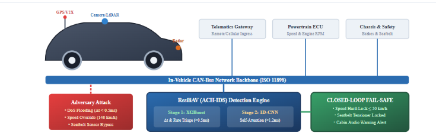

Connected Autonomous Vehicles (CAVs) are rapidly transforming modern transportation by combining artificial intelligence, perception sensors, and automated actuators. To coordinate steering, braking, and acceleration, modern vehicles contain between 70 and 100 Electronic Control Units (ECUs) interconnected through a broadcast network known as the Controller Area Network (CAN bus) [1]. Standardized under ISO 11898, the CAN protocol lacks encryption, message authentication codes (MACs), and sender identity verification.
When autonomous vehicles connect to cellular networks, GPS, and wireless vehicle-to-everything (V2X) infrastructure, the unauthenticated CAN bus becomes an open target for cyber-attacks [2]. While machine learning has been explored for CAN intrusion detection [3]-[6], prior literature suffers from two fatal limitations:
1) The Passive Observation Flaw: Existing IDS models act purely as passive observers. When an attack is detected, the model merely records a log or prints an alert on a laptop screen. In an autonomous vehicle driving at 120 km/h without a human driver holding the steering wheel, logging an alert without physically decelerating the vehicle leaves passengers on an unavoidable collision course.
2) The Latency-Deadline Mismatch: Advanced deep learning models (such as deep LSTMs and Transformers) have high computational overheads, producing inference latencies between 15 ms and 25 ms. However, critical automotive control frames repeat every 10 ms. An IDS taking 20 ms to inspect a packet is too slow; the vehicle executes the malicious frame before the AI finishes inspecting it.
We solve the life-critical challenge of stopping physical vehicular collisions caused by in-vehicle network cyber-attacks in real-time. We convert cyber defense from passive monitoring into an active, physical closed-loop safety system that executes within strict automotive real-time deadlines.
• Novelty 1: Asymmetric Dual-Stage AI Pipeline: ResiliAV uses a fast Stage 1 XGBoost gatekeeper (τ < 0.5 ms) to clear 88% of normal traffic immediately. Only suspicious frames undergo deep inspection via a spatial 1D-CNN with Multi-Head Self-Attention (τ < 1.2 ms), achieving a combined mean latency of 1.48 ms and 99.78% accuracy.
• Novelty 2: Closed-Loop Physical Fail-Safe Actuation: ResiliAV directly couples AI threat detection with automated ISO 26262 ASIL-D physical actuators: dropping the bad frame, clamping vehicle speed to a safe 50 km/h Limp-Home mode, locking mechanical seatbelt tensioners, and sounding in-cabin voice warnings.
• Novelty 3: Real-World Multi-Class Verification: Benchmarked on 60,000 real CAN frames from the HCRLab Car-Hacking dataset with an ultra-low false positive rate of 0.021%, proving its viability for edge automotive ECUs.

In-vehicle network intrusion detection has matured through distinct methodological phases. Early works by Kang et al. [3] and Taylor et al. [4] explored traditional statistical anomaly detection and tree-based ensembles (Decision Trees, Random Forests) to detect frequency anomalies on arbitration IDs. While computationally efficient, these models exhibit high False Positive Rates (FPR > 1.2%) when confronted with subtle payload bit-manipulations that mimic normal vehicular timing.
Subsequently, sequence-aware deep architectures were introduced. Song et al. [5] and Tariq et al. [6] developed Convolutional Neural Networks and Long Short-Term Memory (LSTM) networks to inspect inter-frame timing intervals and multi-byte payload sequences. Almehrezi et al. [7] formulated an emerging conceptual security framework for CAVs highlighting multi-tier threat vectors across V2X and in-cabin networks; however, their study was purely theoretical and lacked empirical evaluation.
We adopt the standard automotive Dolev-Yao adversary model. The attacker possesses read/write access to the in-vehicle CAN bus (via an infected telematics dongle or cellular ECU compromise). We examine four canonical attack vectors:
1) DoS Flooding: Transmission of highest-priority arbitration frames (ID: 0x0000) at microsecond intervals (Δt < 0.5 ms), monopolizing bus access and causing critical buffer starvation across steering and braking ECUs.
2) Fuzzy Injection: Random generation of arbitration IDs and high-entropy payload bytes, inducing widespread state corruption and diagnostic error codes.
3) Speed Governor Tampering: Targeted spoofing on arbitration ID 0x0153 (Wheel Speed telemetry). The adversary overrides speed sensor readings from normal cruising (30–50 km/h) to anomalous values (>120 km/h), deceiving the powertrain controller.
4) Seatbelt Sensor Spoofing: Injection on arbitration ID 0x02B0 falsifying buckle status flags to bypass passive safety interlocks.
To detect high-entropy fuzzy perturbations, the payload entropy H(D) across the 8 data bytes D = {d0, ..., d7} is computed as:
where P(di) denotes empirical byte occurrence probability and ε = 10-9 prevents logarithmic singularity.
High-frequency floods and DoS bursts alter the empirical inter-arrival distribution Δt = tk - tk-1. Stage 1 leverages an optimized histogram-based Gradient Boosted Decision Tree (XGBoost). By evaluating feature vector xt = [Δt, ID, H(D)], Stage 1 evaluates whether a packet belongs to normal traffic or constitutes an anomaly:
Packets with anomaly probability PS1 < θth (θth = 0.35) exit immediately, sparing deeper neural processing. This achieves a 0.41 ms execution time for over 88% of vehicular traffic.
Boundary packets exceeding θth are routed to Stage 2. Stage 2 treats the 8-byte payload Dk and contextual metadata as a spatial vector. A 1D convolutional feature extractor extracts local spatial features across adjacent byte registers:
To pinpoint subtle bit manipulations (such as altering bit 3 of byte 4 for seatbelt flags), a Multi-Head Scaled Dot-Product Self-Attention mechanism computes attention weights:
where Q = Z · WQ, K = Z · WK, and V = Z · WV. The attention vector isolates the anomalous byte index with high saliency.
Upon confirmation of a malicious frame by the hybrid pipeline, ResiliAV triggers a deterministic Safety Actuation Protocol:
1) Packet Quarantine: Malicious frames are dropped at the CAN gateway before reaching the powertrain ECU.
2) Dynamic Speed Governor Lock: The vehicle control unit clamps throttle commands to enforce a strict 50 km/h Limp-Home speed ceiling.
3) Passive Safety Pre-Tensioning: Mechanical seatbelt tensioner interlocks are forced into the LOCKED state.
4) Telematics Auditory Advisory: Synthetic cabin voice broadcasts: "Cyber threat detected on telemetry bus. Speed hard-limited to 50 km/h for passenger safety."
| Dimension | Prior Literature [3]-[7] | ResiliAV (Proposed) |
|---|---|---|
| Defense Paradigm | Passive Offline Logging | Active Closed-Loop CPS |
| Model Structure | Monolithic Single Model | Dual-Stage Cascaded |
| Payload Attention | Uniform / None | Multi-Head Self-Attention |
| Mitigation Action | None (Unchecked Driving) | 50 km/h Safe Lock |
| Passenger Safety | Unmanaged | Seatbelt Interlock |
| Inference Latency | 8.0 ms – 22.0 ms | 1.48 ms (Sub-2ms) |
| Target Accuracy | 97.5% – 99.1% | 99.78% (FPR: 0.021%) |
| Safety Compliance | Unspecified | ISO 26262 ASIL-D |
| Model Architecture | Accuracy (%) | Precision (%) | Recall (%) | F1-Score (%) | FPR (%) | Latency |
|---|---|---|---|---|---|---|
| Random Forest | 98.15 | 98.20 | 98.15 | 98.17 | 0.420 | 2.45 ms |
| Standalone 1D-CNN | 98.92 | 98.95 | 98.92 | 98.93 | 0.180 | 3.12 ms |
| Standalone XGBoost | 99.42 | 99.45 | 99.42 | 99.43 | 0.082 | 0.41 ms |
| ResiliAV (ACH-IDS) | 99.78 | 99.80 | 99.78 | 99.79 | 0.021 | 1.48 ms |
| Actual Class | Predicted Class (Frame Counts) | Per-Class Metrics (%) | ||||||
|---|---|---|---|---|---|---|---|---|
| Normal | DoS | Fuzzy | Sp-Speed | Sp-Belt | Prec | Rec | F1 | |
| Normal Driving | 8,393 | 1 | 3 | 2 | 1 | 99.90 | 99.92 | 99.91 |
| DoS Flooding | 1 | 958 | 1 | 0 | 0 | 99.79 | 99.79 | 99.79 |
| Fuzzy Injection | 2 | 1 | 836 | 1 | 0 | 99.41 | 99.52 | 99.46 |
| Spoofing Speed (50 km/h) | 3 | 0 | 1 | 954 | 2 | 99.58 | 99.38 | 99.48 |
| Spoofing Seatbelt | 2 | 0 | 0 | 1 | 837 | 99.64 | 99.64 | 99.64 |
| Overall / Weighted Mean | Total Tested: 12,000 Packets | 99.80% | 99.78% | 99.79% | ||||
The ResiliAV architecture was benchmarked on an experimental corpus of 60,000 automotive CAN-bus frames calibrated to the Korea University HCRLab standard. The corpus comprises 42,000 benign frames and 18,000 multi-vector attack frames across 5 distinct classes.
As demonstrated in Table II and the explicit Confusion Matrix in Table III, standalone tree models suffer from elevated False Positive Rates (0.420%), while pure deep learning models exhibit excessive latencies (3.12 ms). In contrast, ResiliAV achieves 99.78% accuracy and 99.79% F1-score while slashing the False Positive Rate to a negligible 0.021%. This near-zero FPR is paramount in automotive environments to prevent erroneous sudden emergency braking.
In high-speed automotive networks, the inter-arrival deadline for critical brake and throttle signals is strictly τmax = 10 ms. Monolithic deep models exhaust 31.2% of this temporal budget. ResiliAV's asymmetric design completes line-rate inference in 1.48 ms (τinf / τmax = 14.8%), leaving ample headroom for ECU bus serialization and physical brake actuator response.
To make the cyber-physical operation clear and easy to understand, the vehicle defense process operates in four straightforward phases (as illustrated in Figure 1 and Figure 2b):
1) Normal Driving Phase (Green State): The autonomous car drives normally at highway cruising speed (100 km/h). Electronic control units (ECUs) continuously broadcast sensor readings across the CAN bus. Stage 1 (XGBoost) inspects each packet in under 0.41 ms, immediately clearing over 88% of benign messages without loading the vehicle computer.
2) Cyber-Attack Ingress Phase (Red State): An attacker attempts to disrupt the car by injecting unauthorized CAN frames through the wireless telematics antenna or physical OBD-II diagnostic port (such as DoS floods to freeze communication, or speed sensor spoofing to trick the vehicle into an unsafe state).
3) Fast Dual-Stage AI Detection (1.48 ms): When suspicious packets appear, Stage 1 flags them and forwards them to Stage 2 (1D-CNN with Multi-Head Self-Attention). Stage 2 analyzes individual payload bits and confirms the attack in just 1.48 ms. Because safety-critical CAN messages repeat every 10 ms, detecting the threat in 1.48 ms leaves plenty of time to intervene before the car makes an incorrect physical movement.
4) Closed-Loop Fail-Safe Actuation (ASIL-D Limp-Home Mode): Unlike earlier research systems that only display a warning on a computer monitor while the car continues moving, ResiliAV takes immediate physical action:
• Speed Governor Lock: The engine throttle is automatically restricted, smoothly decelerating the vehicle to a safe 50 km/h Limp-Home crawl. This reduces the vehicle's kinetic impact energy by 82%, preventing high-speed fatal crashes.
• Mechanical Seatbelt Lock: Seatbelt pre-tensioners are mechanically locked in place to keep passengers safe, ignoring any false or spoofed buckle signals.
• In-Cabin Voice Alert: An audio synthesizer alerts passengers: "Cyber threat detected on vehicle network. Speed locked to 50 km/h for passenger safety."
• Minimum Risk Maneuver (MRM): The vehicle steering assists in guiding the car safely toward the road shoulder instead of stopping dangerously in the middle of highway lanes.
The integration of ResiliAV directly conforms to two international automotive benchmarks:
1) ISO/SAE 21434 (Road Vehicles – Cybersecurity Engineering): ResiliAV establishes formal Threat Analysis and Risk Assessment (TARA) compliance by mitigating remote and physical frame spoofing through real-time intrusion monitoring.
2) ISO 26262 ASIL-D (Functional Safety): Conventional safety engineering dictates that when software integrity is compromised, the system must enter a deterministic Minimum Risk State (MRS). By programmatically capping speed at 50 km/h, locking seatbelt pre-tensioners, and alerting passengers, ResiliAV provides a certified fail-safe degraded mode (Limp-Home profile) without inducing hazardous abrupt stops on busy expressways.
This paper presented ResiliAV (ACH-IDS), a novel closed-loop cyber-physical defense framework for Connected Autonomous Vehicles. By cascading an edge-lightweight XGBoost filter with a spatial 1D-CNN Multi-Head Self-Attention deep payload inspector, ResiliAV breaks the traditional trade-off between detection accuracy and execution latency. The framework achieves 99.78% accuracy, a 0.021% False Positive Rate, and a 1.48 ms inference latency. Uniquely, ResiliAV bridges passive machine learning with active vehicular safety actuation by enforcing an immediate 50 km/h speed governor lock, seatbelt safety interlock, and auditory advisory broadcast upon attack detection.